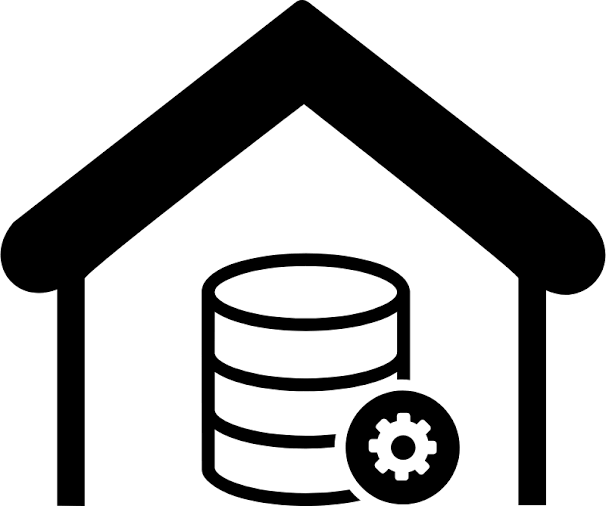
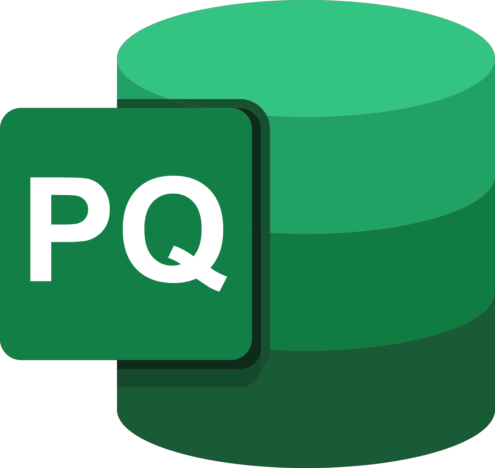
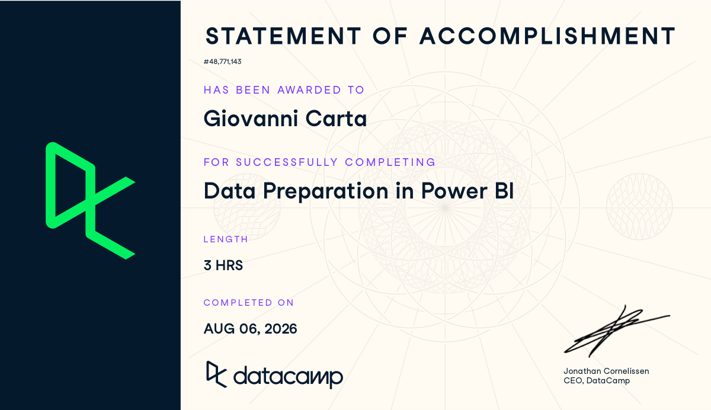
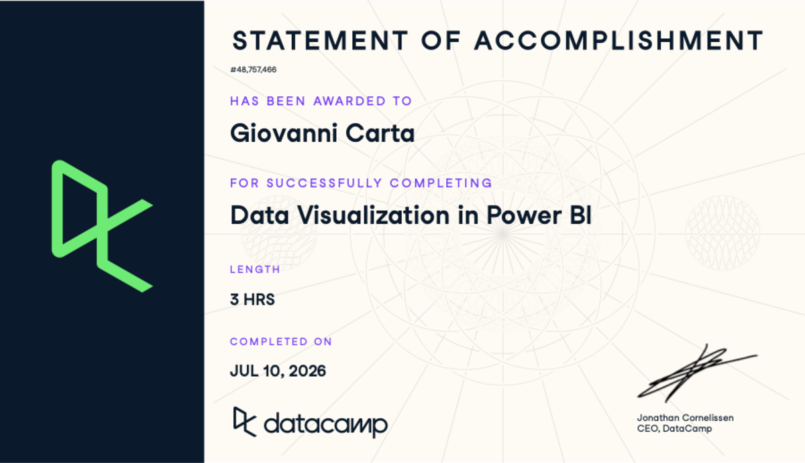
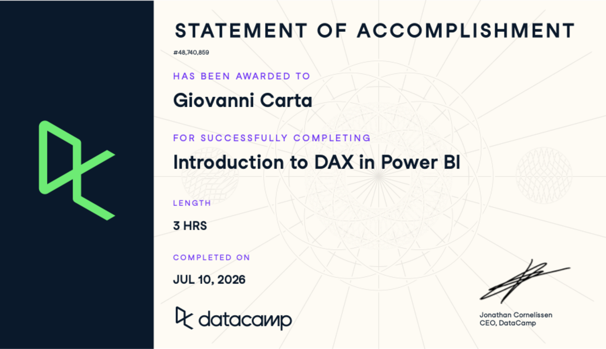
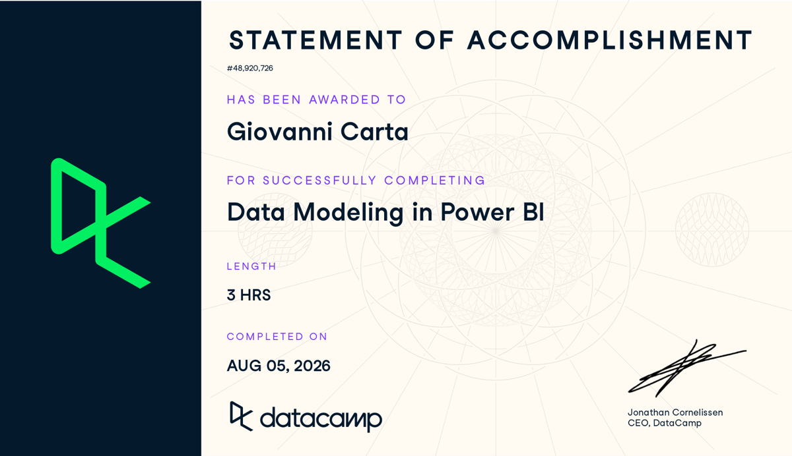
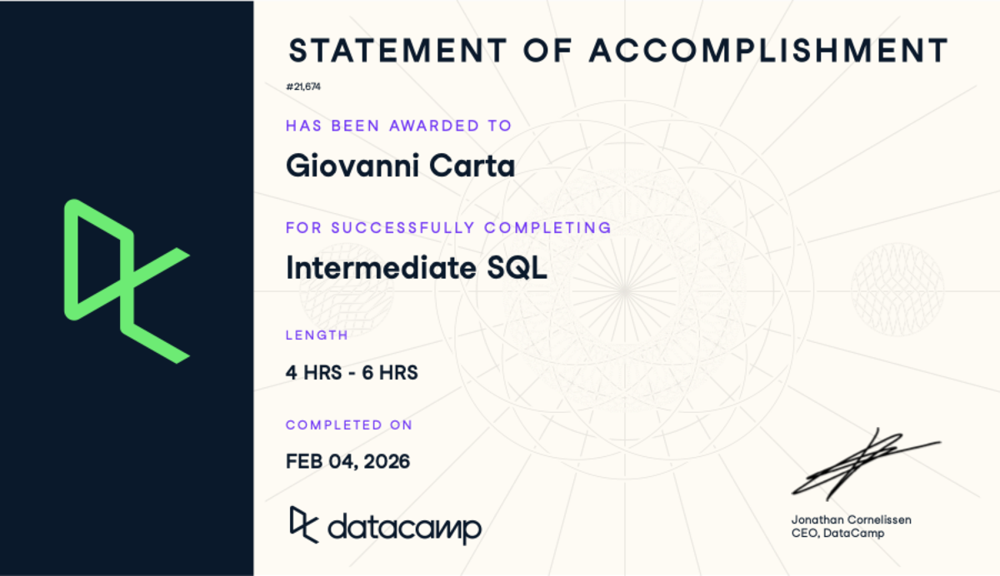

Business question
Define the objective, stakeholders and key KPIs.
Output
Clear analytical objective
Business Analytics · Data Storytelling · Performance
I combine analytical thinking, business understanding and communication to explore problems, identify useful evidence and make findings easier to act on.
Portfolio footprint
Evidence gathered across research, fieldwork and teaching.Selected public metrics. Confidential professional figures are excluded.My analytical process
From a business question to a decision-ready output.
Define the objective, stakeholders and key KPIs.
Clear analytical objective
Gather relevant business, research and operational data.
Structured data sources
Work with structured data stored in databases or warehouse environments, and query it with SQL for analysis-ready extraction.
Accessible structured data

Clean, transform and validate the information.
Reliable analytical dataset

Explore patterns, segments, KPIs and performance.
Evidence and insights
Turn findings into dashboards, stories and recommendations.
Decision-ready result

About
A business mind with an analytical toolkit
I moved to Switzerland to grow in an international environment and build a career at the intersection of analytics and business decision-making.
My background combines Business Administration, Market Research and an MSc in Business Analytics at the University of Geneva. I am especially interested in work where the right question matters as much as the technical method.
See my journey →Selected projects
Not just what I built, but why I built it that way and what the analysis can—and cannot—tell us.
How does model complexity affect temperature prediction as the forecast horizon increases?
A supervised learning comparison using Swiss weather data, motivated feature engineering and held-out evaluation across three horizons.
How can consumer evidence help a strong product become easier to notice, understand and choose?
A mixed-method university project combining research, behavioural observation, analytics and a data-informed campaign and packaging concept.
Developed in response to a business challenge presented by Fater for Ace Spray.
Explore the case study →How do consumers and marketing professionals perceive AI-powered customer interactions?
A mixed-method study exploring adoption, satisfaction, trust and the role of human oversight across the customer journey.
Explore the case study →
How can structured mystery shopping reveal differences in store quality, staff competence and customer support?
A field research project using scenarios, scorecards and verification visits to compare the retail experience of Cromology products.
Explore the case study →How can consumer utilities be translated into product, pricing and launch decisions?
A conjoint-based simulation comparing product configurations, preference shares, expected revenue and scenario-based profit.
How can an operational booking process be translated into a reliable database and an analytics-ready data model?
A university prototype combining relational design, SQL, trigger automation, quality validation and KPI-ready transformations.
How can one semantic model support executive, product and sales-force decisions?
A fictional public-practice dataset explored through Power BI, DAX, commercial KPIs and decision-focused report design.
Experience
My experience spans analysis, reporting, digital behaviour, tutoring and client-facing environments.
Volta Circle
Supported recurring analysis, market research and internal reporting. Created Power BI dashboards, Excel trackers and presentation materials.
Style 'n Travel
Analysed web traffic and user behaviour data to support performance tracking and commercial analysis.
Superprof
Supported more than 50 students, developing a practical ability to explain technical and business concepts clearly.
Galateo Ricevimenti
Supported operations and client relations during high-end corporate events for international luxury brands.
Education & toolkit
University of Pisa
Business, accounting and management foundations.
University of Pisa
Statistical analysis, market research and marketing management.
University of Geneva
Machine Learning, Prescriptive Analytics, Forecasting and advanced data-driven decision-making.
Certifications · Continuous learning
A structured learning path across Power BI, DAX, SQL, PostgreSQL, Python and modern data platforms—selected to reinforce the tools used throughout my analytics projects.

Featured learning track
A structured 19-hour learning track covering data preparation, modelling, DAX and data visualisation in Power BI.

Data preparation

Business intelligence

DAX & modelling

Data modelling

SQL
Python
Power BI
Business intelligence · DataCamp
Applied Power BI · DataCamp
SQL & PostgreSQL
SQL · DataCamp
SQL · DataCamp
PostgreSQL · DataCamp
PostgreSQL · DataCamp
SQL · DataCamp
Python & R
Python · DataCamp
R · DataCamp
R · DataCamp
Data Platforms
Data platform · DataCamp
These courses complement applied work in forecasting, Power BI reporting, SQL-based data architecture and business analytics.
Let's connect
I am open to opportunities and exchanges around business analytics, forecasting, market research and performance.